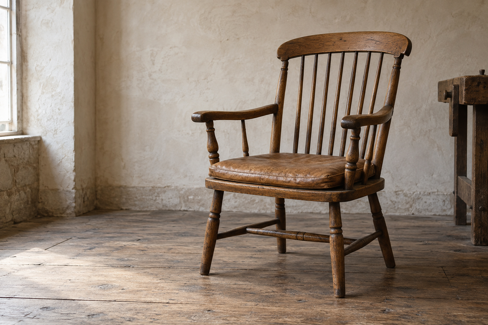

Design skills for coding agents
Make the whole thing
feel considered.
From the first impression to the last interaction.
Give your agent a process for the decisions that matter.
A fictional studio with working object studies and a local inquiry flow. Furniture imagery is AI-generated. About the work ↗
A good opening is
only the beginning.
A page should feel like one idea, carried through. The imagery, the type, the pace—and the small moments when someone touches it.
Seenry helps your agent explore the structure, finish a representative slice, and check what actually made it into the browser.
Look a little closerComposition, with consequences
Same material.
A different
first impression.
Put the object first, or let the story lead. Try both with the same words and image.
The introduction leads; the photograph supports it.
Good pieces.
Another chapter.
Thoughtful repairs for the furniture you want to keep.
Meet the studio
One point of view.
Every part of the work.
Use the guidance your project needs.
Keep the decisions connected.
Structure & visual craft
Reading order, real material, type and a coherent page.
Motion & interaction
Feedback that explains a change and keeps your place.
Imagery & identity
Useful assets, deliberate crops and a consistent voice.
Stories & presentations
A clear sequence from the first idea to the final takeaway.

Guidance first. More references when you need them.
Your process.
A wider perspective.
The core skills work locally. Add Seenry MCP to study website captures, app screens and recorded interactions alongside your project.
You don’t need Jev, an API key or a reference subscription to use the skills.
Explore the reference library